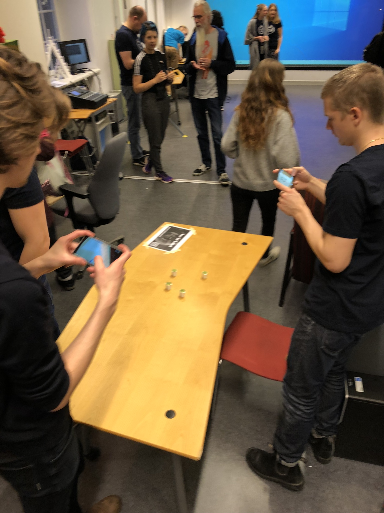

Welcome to the Age Of Garb Project Webpage!
ABOUT Age Of Garb
Goals and Motivation
In this project, we wanted to achieve a well functioning and fun AR game that let players take control over a drone using their phone to interact with an environment that was placeable on a surface. The goal was to create a playable field that would not be limited to a small surface such as a table or a set range on the ground. Instead we wanted the player to be able to define the size of the scene before they played in order to truly utilize the most of the potential available open space for the player. We spent some time to refine this idea during the development process and ended up with the final project.Technologies
UnityAR-Core
GitHub
Contributions
The project contributes graphics wise by displaying a resizeable playing surface on a selectable plane. The player scans their environment and then select exactly where the playing area should be located. To avoid scaling down the area in unity which would make some implementation code break, the placeable play area is actually never resized at all. Instead a script is placed on the camera which makes it look like the placeable area is really small, when in reality, the camera is placed really far away.The advanced interaction contribution for this project comes in two parts. Firstly, you can control the playable drone character by actually moving the camera though physical space. By simple moving closer to the play area, the playable character is moved closer as well, which makes the players mobile screen a first person view perspective.
The second interaction contribution is the trash-can ficons. When these trash cans are scanned by the mobile phone, the player manually place them where the physical ficon is placed. This allows the player to configure the placements of the trash cans which affects how the game is played.
Challenges and Obstacles
We face multiple challenges with this project that we overcame in the end. One big challenge was that the game code broke down when using small scales for the play area. Which was significant since the scaling of the playable area is a main goal for this project. In the end this issue was solved by placing a script on the camera which makes it look like the placeable area is really small, when in reality, the camera is placed really far away.Related Work
- Blender:- Toward next-gen mobile AR games
Broll, Wolfgang, Irma Lindt, Iris Herbst, Jan Ohlenburg, Anne-Kathrin Braun, and Richard Wetzel.
2008
- Capabilities of ARCore and ARKit Platforms for AR/VR Applications.
Nowacki, P. and Woda
2019
Lessons learned
A lot of things were learned by the team for this project. One such thing was that sometimes it is necessary to radically the idea of the project in order to finish it in time. This was something we had to do multiple times though the development cycle of the project. We also learned that a lot of work is done quickly if you meet up as a group and work together in the same place. A shared work space facilitates communication greatly and helps with the planning and development of most projects. Another thing we learned is that it is fine to change something if it's not working, even if you think it is too late. For example, during the open house event, we quickly realized that the table set-up that we used was not good for showing off the main features of the game. Therefore we changed it on the spot, and it worked out fine.ABOUT US

Natalie Axelsson
My main responsibilities were 3D-modeling and 3D-printing. For example, I created all models related to the trash, and I 3D-printed trash cans that can be scanned in the game. I also worked on procedural genereation of the levels, mostly on the tree placement and the randomized appearance of the trash piles.
Rodrigo Retuerto
I was responsible for the procedural generation within this project. This consists of placement and properties of the main buildings and all the objects( trees, floor, lights, roads, etc) within the scene. This was done using procedural generation so that the user can have a new level each time making the experience a bit more fun. Because the generated level is the centre between our components(AR, AI, etc) I also helped create the bindings and put them together.

Alvaro Ortega Mattsson
I was responsible for the animations and the AI of the NPC's. This includes, adding already existing animations as well as altering some animations, e.g. when they walk with the trash bag over their shoulder and when they throw it in the trash can. I used Unity's animation system Mechanim to control the different states of the animations as well as some of the AI behavior. A large part of the AI implementation was the path finding of the NPC for when they where walking towards the trash cans and running back home, in which I used Unity's NavMesh functionality. I also worked on spawning the NPC's at random locations and using random character meshes among other things.
Tom Axblad
I was the project leader for this project. Which means that I delegated all work for all the other team members. I was also responsible for the project repository and all issues, comments, pull requests, version control, and project planning.When issues arrived when merging the work from multiple group members, it was my job to tweak them to make sure that stuff was integrated correctly.
I also made the website you are looking at right now!
Edin Suta
I was a general gameplay programmer in this project, responsible for various gameplay systems such as the shooting mechanics, projectile logic, a paint splatter system (decal system optimized for mobile platforms, since Unity doesn't support decals for non-HDRP projects) and some minor UI visuals.I was also responsible for all of the music and sound effects in the game. I programmed an audio manager for the game which would manage all of the audio collectively and make it easy to tweak and customize each audio effect or soundtrack that would be triggered. This audio manager was easy to import into any other script in order to easily instance and trigger any sound effects from any piece of game logic (and stop or pause instances when they are no longer needed).
Magnus Lundh Haaland
I am responsible for the AR implementation and developed most of the AR related parts of the project. Some examples include: the plane detection and room scaling, the image tracking for recognizing the 3d printed trash cans, and that the digital objects cast shadows on the ground. I have also worked on parts of the UI and game state system.MEDIA
DEMO REEL

×
FEEDBACK
"It's a game with a pretty unique theme."
"It would be cool if the player could drop water balloons with paint!"
"It's funny how the screams are randomised between characters."
"This is a great game to teach kids about the importance of recycling."